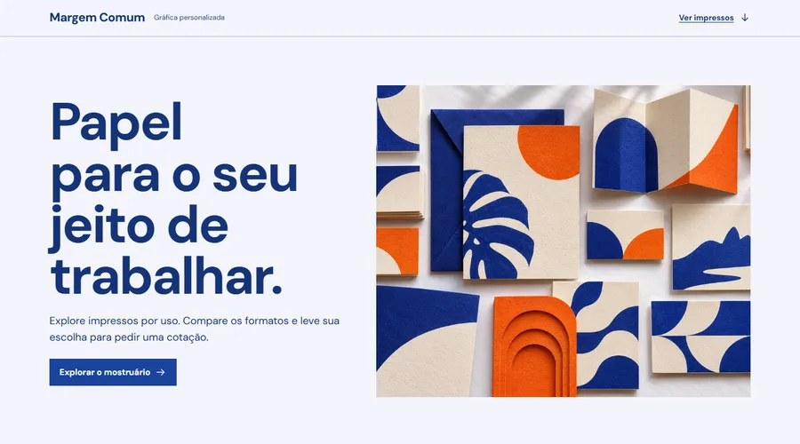
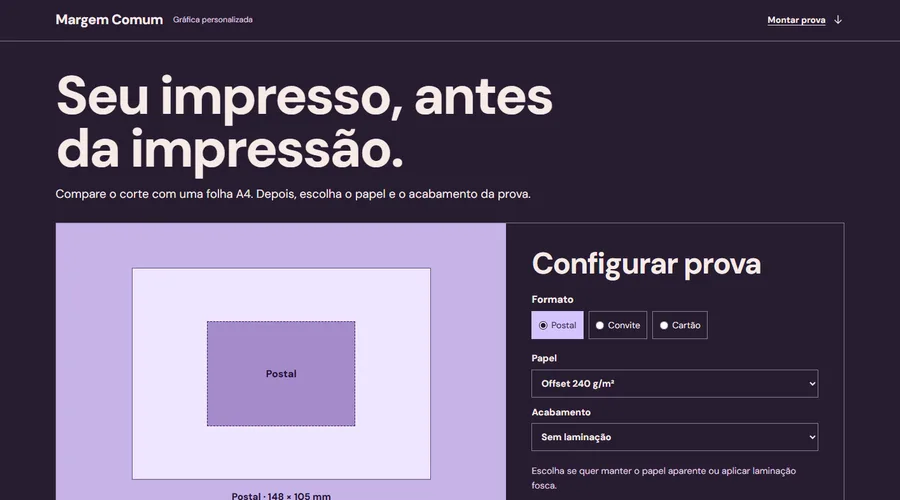
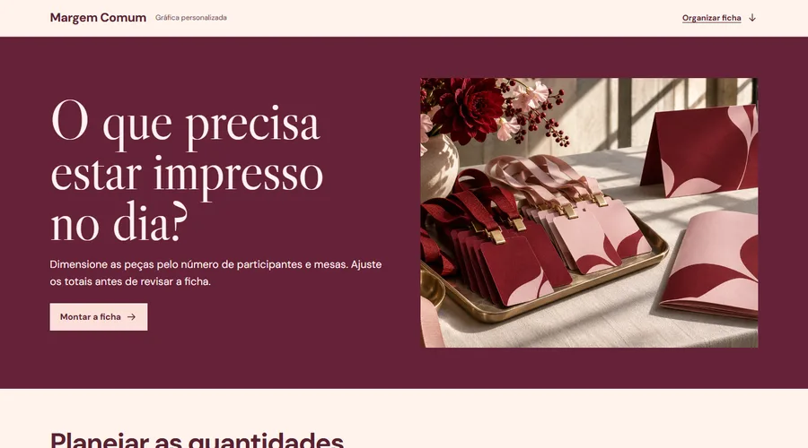

Margem Comum
Três experiências para uma gráfica personalizada.

Mostruário por uso
Compare formatos para apresentar uma marca, atender no balcão ou embalar um produto.
Abrir demonstração
Prova de bancada
Visualize o formato em proporção a uma folha A4 e especifique o papel e o acabamento.
Abrir demonstração
Ficha para evento
Monte uma lista de impressos para recepção, circulação e mesas.
Abrir demonstração